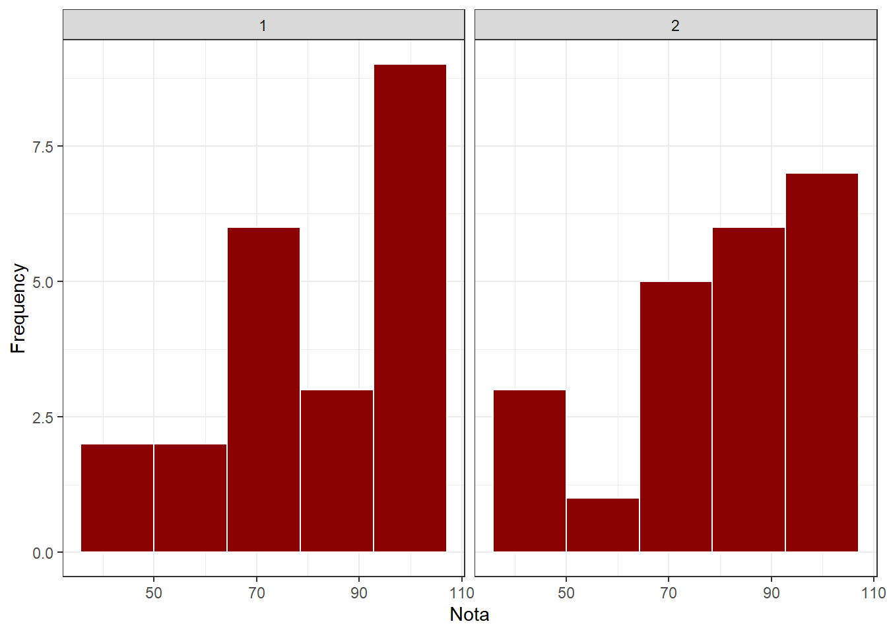
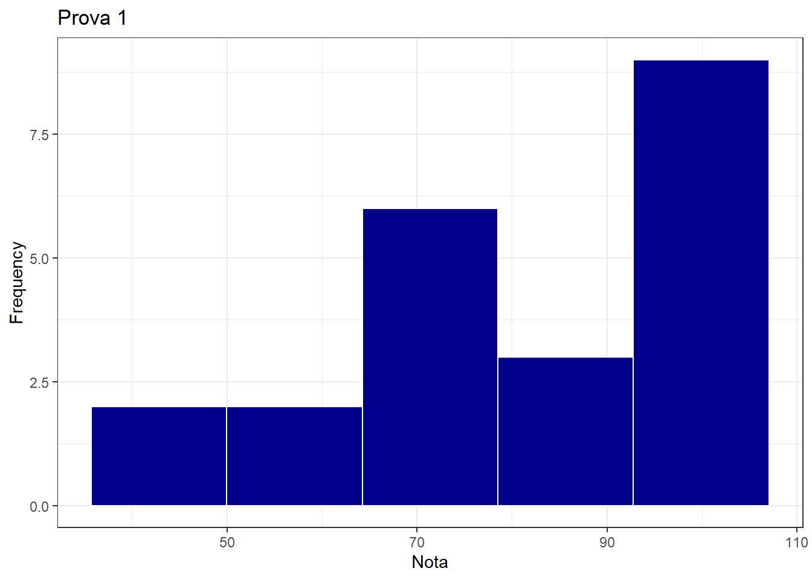
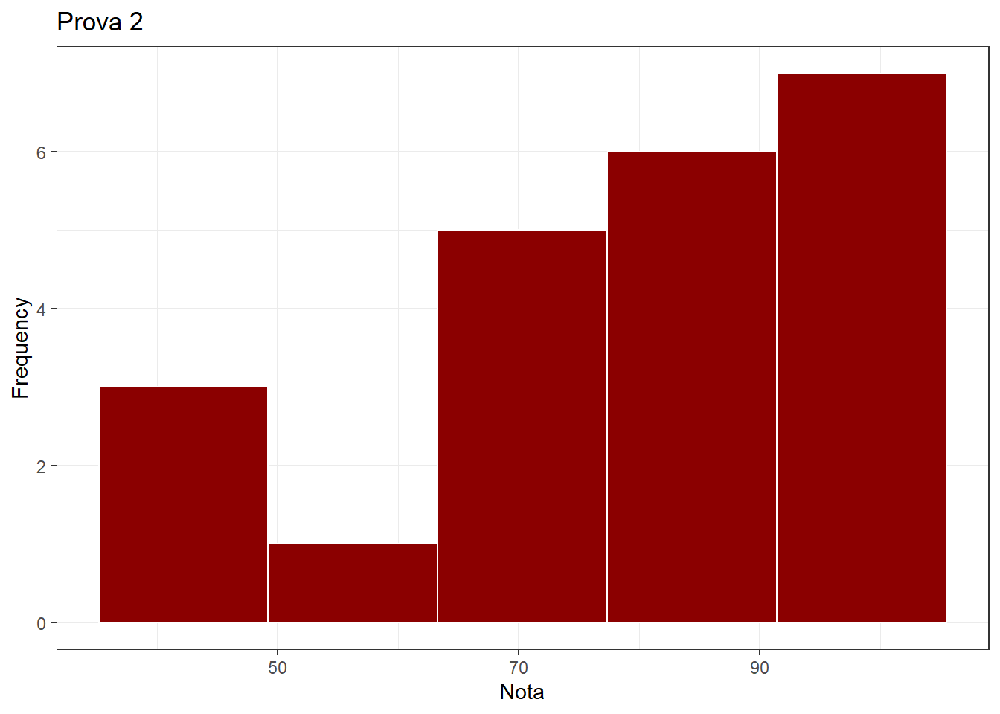
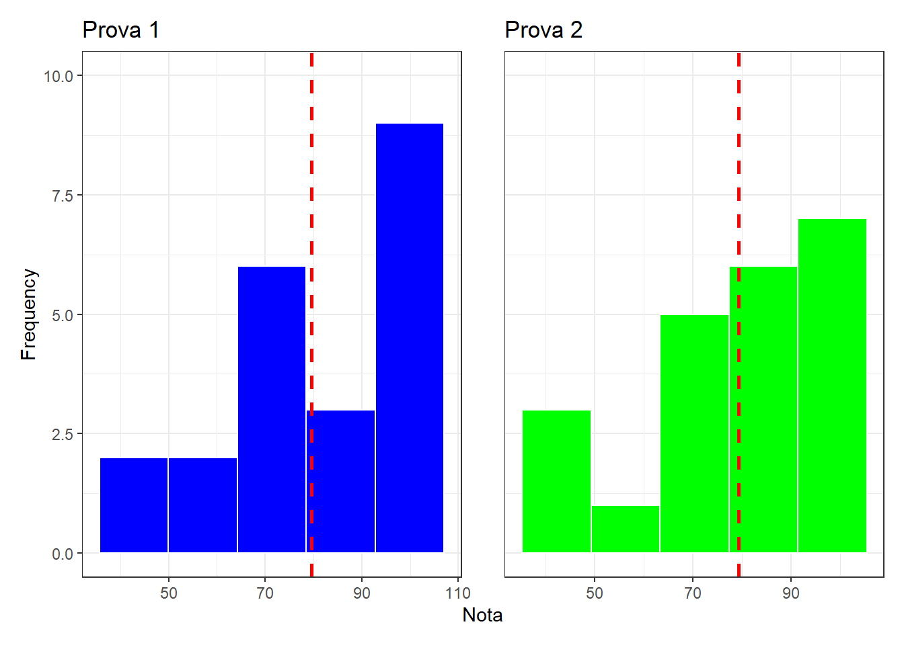
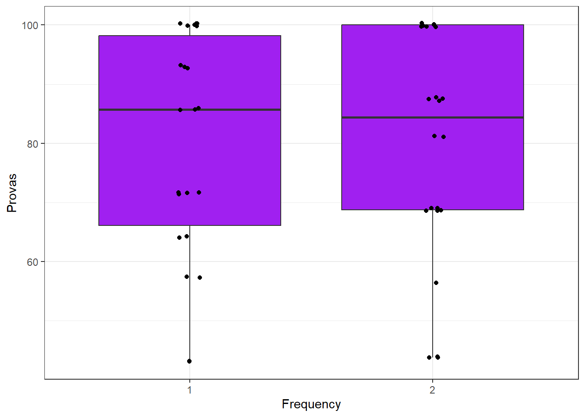
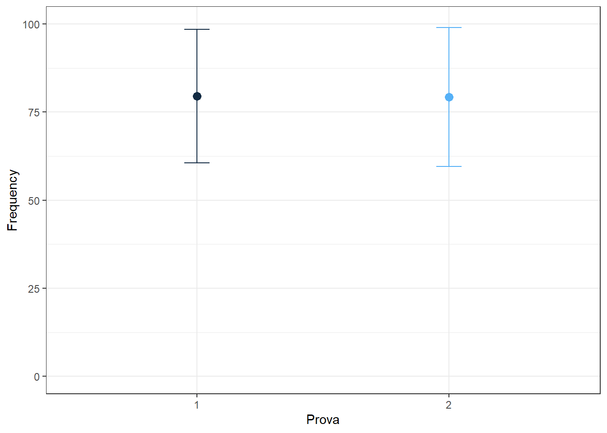

library (gsheet)
ns <- gsheet2tbl("https://docs.google.com/spreadsheets/d/1bq2N19DcZdtax2fQW9OHSGMR0X2__Z9T/edit#gid=1092065531")Aula 5- sumariza e criar gráficos
#Sumarização de dados e apresentação deles Para carregar dados de uma planilha online é necessário abrir o pacote que está dentro da biblioteca gsheet, após isso usa a função gsheet2tbl para puxar os dados da planilha usando um link.
Precisamos analisar os valores de média e mediana para entender melhor os dados antes de fazer a visualização deles com o uso do gráfico. Pode ser observado que os valores médio das provas 1 foram de 79,5 com uma mediana de 85,7 e um desvio padrão de 19. Sendo que os valores variavam entre 42,9 e 100 pontos. Para os valores médio das provas 2 foram de 79,26, com uma mediana de 84,37 e um desvio padrão de 19,70. Sendo que os valores variaram de 43,75 até 100 pontos.
library(tidyverse)
ns|>
group_by(prova) |>
summarise(nota_mean = mean(nota),
nota_med = median(nota),
nota_sd = sd(nota))# A tibble: 2 × 4
prova nota_mean nota_med nota_sd
<dbl> <dbl> <dbl> <dbl>
1 1 79.5 85.7 19.0
2 2 79.3 84.4 19.7Para visualizar os dados e comunicá-los em forma de gráfico é necessário abrir a bibilioteca do ggthemes, após isso escolheremos o tipo de gráfico que queremos, nesse primeiro momento, será escolhido o gráfico de histrograma.
library (ggthemes)
ns |>
ggplot (aes(x= nota)) +
geom_histogram(bins = 5, fill = "darkred", color = "white")+
facet_wrap(~prova) +
scale_fill_colorblind() +
theme_bw() +
labs(x = "Nota",
y = "Frequency")
#Separação dos dados para criar subconjunto
library(ggplot2)
notas1 <- ns |>
select(prova, nota) |>
filter(prova == 1)
notas1# A tibble: 22 × 2
prova nota
<dbl> <dbl>
1 1 71.4
2 1 92.9
3 1 85.7
4 1 42.9
5 1 100
6 1 85.7
7 1 100
8 1 57.1
9 1 100
10 1 71.4
# ℹ 12 more rowsnotas2 <- ns |>
select(prova, nota) |>
filter(prova == 2)
notas2# A tibble: 22 × 2
prova nota
<dbl> <dbl>
1 2 81.2
2 2 68.8
3 2 87.5
4 2 87.5
5 2 87.5
6 2 100
7 2 100
8 2 100
9 2 100
10 2 43.8
# ℹ 12 more rowsnotas1 |>
count (nota)# A tibble: 7 × 2
nota n
<dbl> <int>
1 42.9 2
2 57.1 2
3 64.3 2
4 71.4 4
5 85.7 3
6 92.9 3
7 100 6notas2|>
count(nota)# A tibble: 6 × 2
nota n
<dbl> <int>
1 43.8 3
2 56.2 1
3 68.8 5
4 81.2 2
5 87.5 4
6 100 7#Criação de gráficos separados para cada subconjunto criado
library(ggthemes)
notas1 |>
ggplot(aes(x = nota)) +
geom_histogram(bins = 5, fill = "darkblue", color = "white") +
scale_fill_colorblind() +
theme_bw() +
labs(title = "Prova 1",
x = "Nota",
y= "Frequency")
notas1# A tibble: 22 × 2
prova nota
<dbl> <dbl>
1 1 71.4
2 1 92.9
3 1 85.7
4 1 42.9
5 1 100
6 1 85.7
7 1 100
8 1 57.1
9 1 100
10 1 71.4
# ℹ 12 more rowsnotas2 |>
ggplot(aes(x = nota)) +
geom_histogram(bins = 5, fill = "darkred",color = "white") +
scale_fill_colorblind() +
theme_bw() +
labs (title = "Prova 2",
x = "Nota",
y= "Frequency")
notas2# A tibble: 22 × 2
prova nota
<dbl> <dbl>
1 2 81.2
2 2 68.8
3 2 87.5
4 2 87.5
5 2 87.5
6 2 100
7 2 100
8 2 100
9 2 100
10 2 43.8
# ℹ 12 more rows#Para juntar os gráficos de dois subconjuntos em um único gráfico
p1 <- notas1 |>
ggplot(aes(x = nota)) +
geom_histogram(bins = 5, fill = "blue", color = "White") +
theme_bw() +
labs(title = "Prova 1",
x = "Nota",
y = "Frequency") +
geom_vline(xintercept = 79.54545, linetype = "dashed", color = "red", size = 1) +
ylim(0,10)
p2 <- notas2 |>
ggplot(aes(x = nota)) +
geom_histogram(bins = 5, fill = "green", color = "White") +
theme_bw() +
labs(title = "Prova 2",
x = "Nota",
y = "") +
geom_vline(xintercept = 79.26136, linetype = "dashed", color = "red", size = 1) +
ylim(0,10)
library(patchwork)
(p1 + p2) +
plot_layout(guides = "collect",
axes = "collect") 
#A partir da visualização dos dados, é possível criar quantos gráficos quiser e também se aplicarem ao conjuntos de valores. Para o próximo gráfico, iremos criar um gráfico de boxplot.
library(ggplot2)
ns |>
ggplot(aes(factor (prova), nota)) +
geom_boxplot(fill = "purple") +
geom_jitter(width = 0.05)+
theme_bw() +
labs(x = "Frequency",
y = "Provas")
#Quando se tem poucas amotras e tratamentos, pode-se usar o gráfico de pontos com a utilização de um intervalo de confiança para detalhar o intervalo em que as médias utilizadas se encontram.
library(ggplot2)
ns |>
group_by(prova) |>
summarise(nota_mean = mean(nota),
nota_sd = sd(nota)) |>
ggplot(aes(factor(prova), nota_mean, color =prova)) +
geom_point(size = 3) +
geom_errorbar(aes(ymin = nota_mean - nota_sd,
ymax = nota_mean + nota_sd),
width = 0.1) +
theme_bw()+
theme(legend.position = "none") +
ylim(0,100) +
labs(x = "Prova",
y= "Frequency")